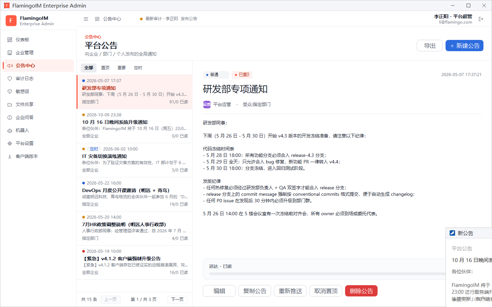
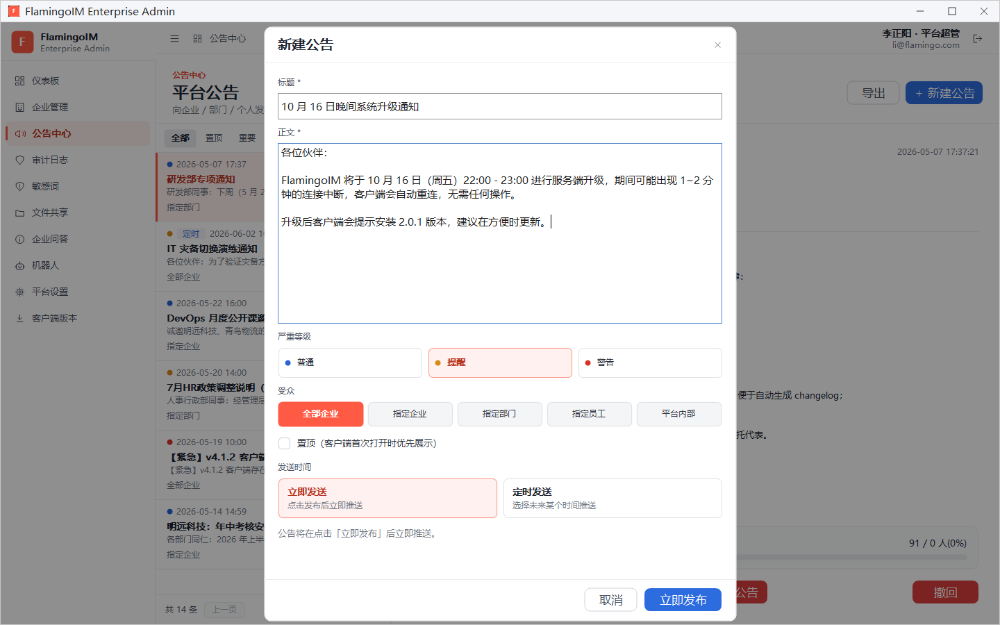
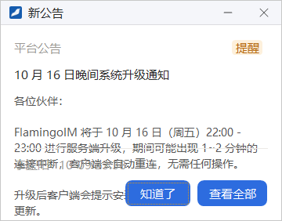

平台公告
平台公告是平台超级管理员向企业、部门或个人发布的全局通知，例如系统升级、安全提醒。员工在客户端右下角收到「新公告」提示，也可以随时在公告中心查看。本章介绍如何新建、定时发布和管理平台公告。
- 适用：平台超级管理员
- 位置：左侧导航「公告中心」
公告列表与详情
点左侧导航的 公告中心，进入「平台公告」页面。左侧是公告列表，右侧是选中公告的详情：

- 右上角：导出 把公告列表保存为 CSV 文件；新建公告 见下一节。
- 筛选：全部、置顶、重要（严重等级为「提醒」或「警告」的公告）、定时（设置了定时发送的公告）。
- 列表：每条公告显示时间（左侧圆点颜色表示严重等级）、标题、正文摘要、受众和已读人数；定时发送的公告带「定时」标记。
- 详情：顶部显示严重等级、已置顶 或 定时发送 标记，下面是标题、发送者、受众和正文；底部的 送达 · 已读 显示阅读进度。定时发送且尚未发出的公告，底部改为显示计划在何时推送给多少名用户。
详情底部的按钮
| 按钮 | 作用 |
|---|---|
| 编辑 | 修改这条公告 |
| 复制公告 | 用这条公告的内容新建一条公告，适合发布格式相近的通知 |
| 重新推送 | 确认后，把公告重新推送给受众里当前在线、还没读过它的成员。只有已发布的公告可以重新推送 |
| 置顶 / 取消置顶 | 切换公告的置顶状态 |
| 撤回 | 只对已发布的公告显示。撤回后所有用户的客户端将不再显示它，操作不可撤销 |
| 删除公告 | 永久删除这条公告，不可恢复 |
新建公告
点右上角的 新建公告（在企业详情页点「发布公告」也会打开同一个对话框）：

- 填写 标题（必填）。
- 填写 正文（必填），换行会原样保留。
- 选择 严重等级：普通、提醒 或 警告。员工在客户端看到的公告会带上对应的等级标记。
- 选择 受众：全部企业、指定企业、指定部门、指定员工 或 平台内部。选择「指定企业」「指定部门」「指定员工」时，下方会出现 投放目标 列表，勾选具体对象，右侧显示已选几项。
- 需要突出显示时勾选 置顶（客户端首次打开时优先展示）。
- 选择 发送时间：立即发送，或 定时发送 并按
YYYY-MM-DD HH:MM的格式填写发送时间。 - 立即发送时点 立即发布，公告立即推送；定时发送时按钮变为 计划发送，到时间后自动推送。
员工这边会看到什么

公告发布后，受众范围内在线的员工会在客户端右下角看到「新公告」提示窗：左上角注明「平台公告」，右上角是严重等级标记（截图中为「提醒」），下面是标题和正文。
员工点 知道了 关闭提示窗，点 查看全部 打开客户端的公告中心并定位到这条公告。员工一侧的详细说明见客户端「公告与通知」。
公告详情底部的阅读进度会随着员工阅读而增加；对还没读过的在线员工，可以用 重新推送 再提醒一次。